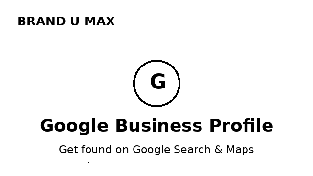
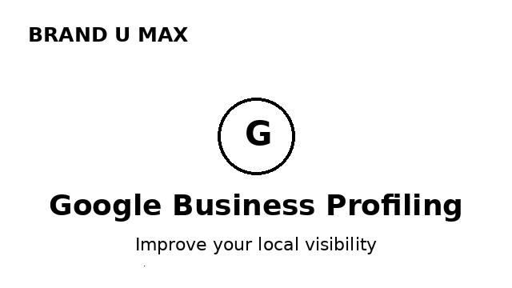
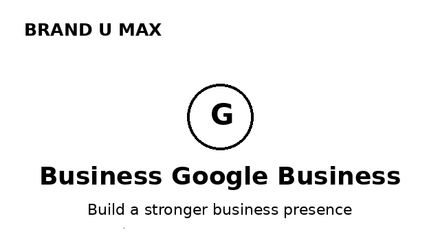
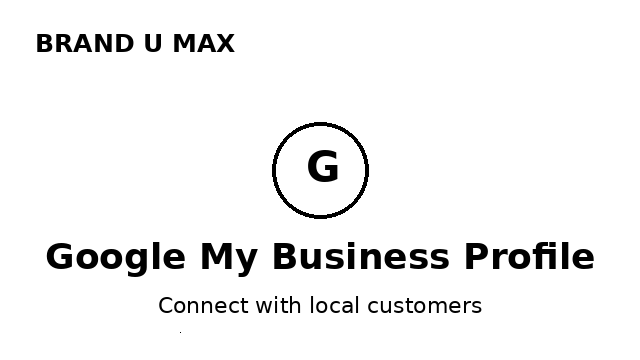
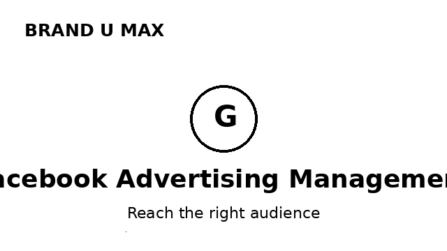
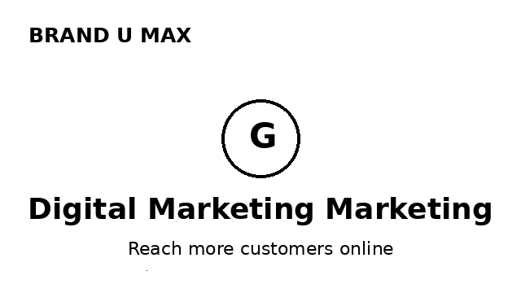

August 29, 2026 · 5 min read
A strong Google Business Profile helps customers discover your business on Google Search and Maps. Many businesses search for terms like google business profile, google business profiling, google my business profile, and even google businessprofile when looking for ways to improve their local visibility.

If your business doesn't appear when customers search for what you offer, you're invisible to buyers who are ready to spend. An optimized Google Business Profile puts you on the map — literally — so nearby customers find, trust and choose you.

Today, most buying decisions start with an online search. Whether a customer is near your store or searching from home, they check Google and social media before deciding. If your business isn't visible, you hand those customers to your competitors.
An optimized listing builds visibility, which builds trust — and trust directly drives growth. That's why local SEO and a strong online presence are essential for every business in Tamil Nadu, from Coimbatore to Chennai.

You may have heard it called google my business profile or simply a google business profile. These all refer to the same powerful, free tool that shows your business details on Google Search and Maps. Keeping it complete, accurate and up to date is the first and most important step in local visibility.

Google helps people find you when they're searching. But what about the customers who don't know you exist yet? That's where Facebook advertising management comes in. With targeted, well-managed ad campaigns, you can reach the right audience, drive engagement and generate new opportunities for your business.

The strongest approach combines both worlds:

At Brand U Max, we help businesses optimize their Google presence, improve local visibility and create practical digital marketing strategies. We also provide Facebook advertising management to help businesses reach the right audience and generate new opportunities.
Build visibility. Build trust. Grow your business.
A Google Business Profile is a free listing that shows your business details — name, address, phone, hours, photos and reviews — on Google Search and Google Maps. Optimizing it helps local customers find and choose you.
Facebook advertising management helps your business reach the right audience with targeted ads, generate new leads and grow sales. A managed campaign maximizes your ad spend and ROI.
Create and optimize your Google Business Profile, generate customer reviews, build local SEO, and run targeted digital marketing to improve visibility on Google Search and Maps.
Get a free audit and we'll show you how to improve your local visibility and reach new customers.
Get a Free Audit